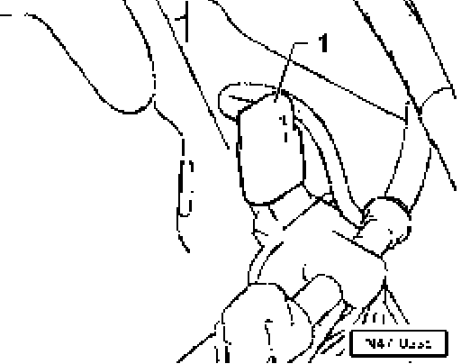
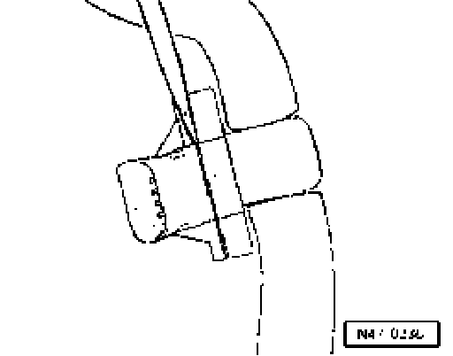

Brake Booster Pressure Sensor G294, Removing and Installing
Brake booster pressure sensor G294
removing and installing
Removing
- Remove plenum chamber cover

- Separate connector - 1 -.

- Carefully pry down brake booster pressure sensor G294 and remove.
Installing
Installation is in reverse sequence to removal.
Checking check valve
Air must pass through valve in direction of arrow.
Valve must remain closed in opposite direction.
Observe correct installation position.